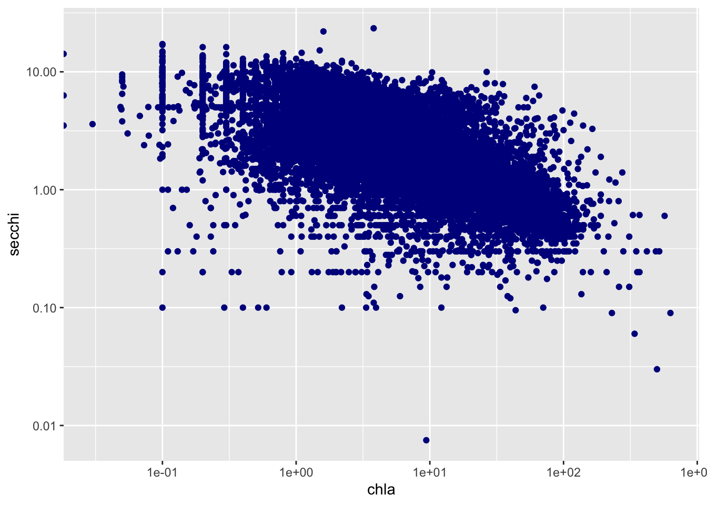

Chapter 5 LAGOS Analysis Part 2
In this second part of the LAGOS Analysis assignment, I also explored spatial operations in R. In this assignment however, I looked at the water quality in lakes and how secchi disk depth is correlated to the amount of chlorophyll in the lake. I also looked at the amount of data for each state.
5.1 Loading in data
5.1.1 First download and then specifically grab the locus (or site lat longs)
#Lagos download script
#lagosne_get(dest_folder = LAGOSNE:::lagos_path(),overwrite=T)
#Load in lagos
lagos <- lagosne_load()
#Grab the lake centroid info
lake_centers <- lagos$locus
# Make an sf object
spatial_lakes <- st_as_sf(lake_centers,coords=c('nhd_long','nhd_lat'),
crs=4326)
#Grab the water quality data
nutr <- lagos$epi_nutr
#Look at column names
#names(nutr)5.1.2 Subset columns nutr to only keep key info that I wanted
clarity_only <- nutr %>%
select(lagoslakeid,sampledate,chla,doc,secchi) %>%
mutate(sampledate = as.character(sampledate) %>% ymd(.))5.1.3 Keep sites with at least 200 observations
#Look at the number of rows of dataset
#nrow(clarity_only)
chla_secchi <- clarity_only %>%
filter(!is.na(chla),
!is.na(secchi))
# How many observatiosn did we lose?
# nrow(clarity_only) - nrow(chla_secchi)
# Keep only the lakes with at least 200 observations of secchi and chla
chla_secchi_200 <- chla_secchi %>%
group_by(lagoslakeid) %>%
mutate(count = n()) %>%
filter(count > 200)5.1.4 Join water quality data to spatial data
spatial_200 <- inner_join(spatial_lakes,chla_secchi_200 %>%
distinct(lagoslakeid,.keep_all=T),
by='lagoslakeid')5.1.5 Mean Chl_a map
### Take the mean chl_a and secchi by lake
mean_values_200 <- chla_secchi_200 %>%
# Take summary by lake id
group_by(lagoslakeid) %>%
# take mean chl_a per lake id
summarize(mean_chl = mean(chla,na.rm=T),
mean_secchi=mean(secchi,na.rm=T)) %>%
#Get rid of NAs
filter(!is.na(mean_chl),
!is.na(mean_secchi)) %>%
# Take the log base 10 of the mean_chl
mutate(log10_mean_chl = log10(mean_chl))
#Join datasets
mean_spatial <- inner_join(spatial_lakes,mean_values_200,
by='lagoslakeid')
#Make a map
mapview(mean_spatial,zcol='log10_mean_chl')5.2 The correlation between Secchi Disk Depth and Chlorophyll a for sites with at least 200 observations
- Here, I plotted chla vs secchi for all sites
#plotting chla vs secchi for sites with at least 200 observations
ggplot(chla_secchi_200, aes(x=chla, y = secchi)) +
geom_point(color = "darkblue")+
scale_x_log10()+
scale_y_log10()## Warning: Transformation introduced infinite values in continuous x-axis
cor(chla_secchi_200$chla, chla_secchi_200$secchi)## [1] -0.37740895.3 Why might this be the case?
The correlation of the Secchi Disk Depth and Chlorophyll A is -0.3774. This low negative correlation could be because the more Chlorophyll A in the water causes the water to become more turbid, which causes the Secchi Disk Depth to decrease.
5.4 States that have the most data
5.4.1 First I made a lagos spatial dataset that has the total number of counts per site.
code for question 2 was from Amanda Hastings on the code help - had a lot of trouble and got frustrated, which led me to cave and use Amanda’s code
#creating counts object with the lagos spatial data set
site_counts <- lake_centers %>%
group_by(lagoslakeid) %>%
mutate(count = n()) %>%
select(lagoslakeid, nhd_long, nhd_lat, count, state_zoneid)5.4.2 Second, I joined this point dataset to the us_boundaries data.
#joining the states with the lagos counts
states_lagos <- lagos$state %>%
select(-state_pct_in_nwi, -state_ha_in_nwi,-state_ha)
stateid_counts <- inner_join(site_counts, states_lagos, by="state_zoneid")5.4.3 Then I grouped by state and sum all the observations in that state and arrange that data from most to least total observations per state.
#grouping by state and summarizing counts in each state
state_sums <- stateid_counts %>%
group_by(state_name) %>%
summarize(sum_counts = sum(count))
states <- us_states()
#joining states and the counts together
states_join <- inner_join(states,state_sums,by='state_name') %>%
arrange(desc(sum_counts))
#mapping the sum counts based on state
mapview(states_join, zcol='sum_counts')The state that has the largest amount of data is Minnesota with 29,022. The state with the 2nd most amount of data is Michigan with 15,569.
5.5 Spatial pattern in Secchi disk depth for lakes with at least 200 observations
#mapping the secchi disk depth for lakes with at least 200 using the spatial 200 table
spatial_200 %>%
arrange(-secchi)%>%
mapview(.,zcol = 'secchi')There does not seem to be an obvious pattern, however, the secchi disk depths data are clustered in areas of Minnesota, Wisconsin, Missouri, and the Northeast. This could be because of agricultural land being prevalent in these areas. The effects of farming can have an effect on the quality of nearby lakes, which is potentially why there are clusters of secchi disk depth for lakes with at least 200 observations (because they want to monitor these effects).